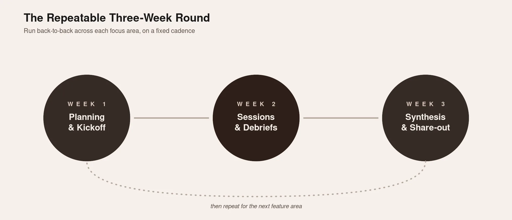
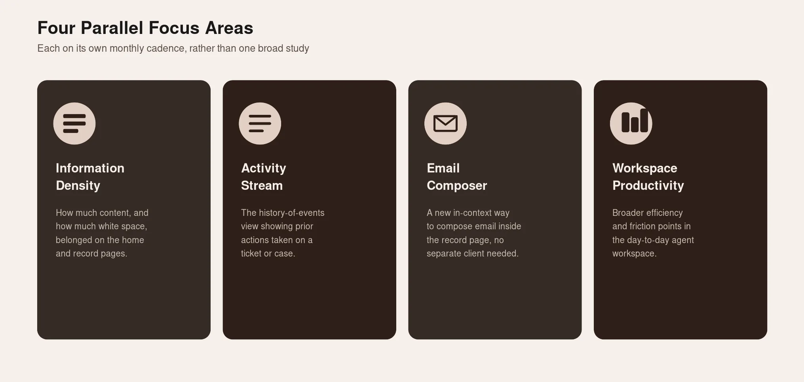

Overview
- Role
- Co-led research program along with a BU Researcher
- Context
- Conducted as a cross-collaboration between the Platform team and Business unit for a large enterprise SaaS platform.
- Methods
- Rolling research, iterative designs, online recruitment, cross-functional synthesis
- Timeline
- June - Sept, 2023
It started over lunch: two researchers on different teams, both stuck on the same problem, with no process built to connect them.
This case study isn't about a single study or a single finding. It's about building a research practice from nothing, with no mandate, no budget, and no guarantee it would stick.
Context
The Partnership
Two product areas at a large enterprise SaaS company, the core Platform organization and a customer-facing Business Unit, shared overlapping roadmap priorities (a shared agent-facing workspace product and a specific agent persona). What they didn't share was a research process. The Business Unit's designs often struggled to get buy-in from Platform, and Platform's research cadence had no built-in path for cross-team validation.
I partnered with a researcher from the Business Unit team to close that gap. Neither of us was asked to do this. It started as a conversation about overlapping goals, and we brought the idea to our managers for approval before building anything.
What each of us brought
- Me: platform knowledge, familiarity with internal processes, prior scoping experience, and existing stakeholder relationships
- My counterpart: Business Unit domain knowledge, prior experience running a version of this methodology before, and the discipline to say no to scope creep
Neither of us could have built this alone. That was the point.
What We Built
We designed "Rolling Research," a lightweight, recurring research model built for testing iterations of multiple designs quickly, rather than running one-off studies per feature. It was explicitly scoped for tactical research, not a replacement for foundational or methodologically complex studies:
- Regularly scheduled research sprints, run on a fixed cadence rather than requested ad hoc
- Smaller sample sizes (5–10 participants) per round
- A pre-recruited general participant profile, so sessions didn't stall on one-off recruiting
- Quick, lightweight analysis turnaround between rounds
Each round followed a repeatable three-week structure: planning and a kickoff in week one, sessions and debriefs in week two, synthesis and report-sharing with both teams in week three. The initial plan mapped three top-priority feature areas onto a multi-month timeline, run back-to-back.

How we Built
Establish one shared, recurring research cadence covering both teams' priority design questions
Move fast enough to stay ahead of active design and product iteration, rather than trailing behind it
Avoid duplicating recruitment, testing, and synthesis effort across two teams working the same space
Prove that a lightweight, sustained cross-team research model could actually survive past its kickoff where earlier attempts had not
How We Worked Together
We met at least once a week to keep the program moving, and we each independently promoted it and invited stakeholders from our respective sides, rather than relying on one owner to drive adoption. We ran it as two researchers by design: a second set of eyes on guides and reports, a backup moderator, and the ability to swap phase ownership to keep pace.
Stakeholder engagement got the same design attention as the research itself:
- Livestreamed sessions via webinar with reusable links. Participants only saw the two moderating researchers, and observers could join invisibly without distracting the participant
- Added upcoming sessions directly to stakeholders' calendars so attending required no extra effort
- Ran optional debriefs immediately after sessions, while the material was still fresh
- Kept a running group chat with live updates during sessions to maintain visibility and momentum across both teams

Research Rigor & Approach
Nature of the research
Qualitative and evaluative: concept testing and usability testing, run as moderated remote sessions rather than unmoderated or quantitative instruments. The goal was fast, directional signal on active design work, not statistical validation.
Remote/in-person
Fully remote, moderated live over video.
Scale & structure
This was a sustained program, not a single study: four parallel work streams, each running its own monthly round, for roughly two consecutive quarters. At full cadence, that meant on the order of 6-7 moderated sessions running every single month for one of four areas. A genuinely high-throughput qualitative research operation sustained over multiple months.
Tooling
Lookback was used to moderate, record, and review sessions; Zoom was used for the live calls themselves; MIRO was used for synthesizing findings across sessions and, across the four parallel workstreams.
Team Structure
Co-led by two researchers, one from each of the two collaborating teams, functioning as joint owners of the program rather than one team leading and the other consulting. Product managers and designers from each area joined rounds relevant to their scope, rather than being included uniformly across all four workstreams.
Recruitment
Relationship-based, solutions-consulting-sourced recruitment of real, external customers, refreshed every round.
Operational Model
The program opened with a scoping session involving more than 20 stakeholders, to walk everyone through the proposed method and cadence, collect each team's research goals and open questions, and align on a priority order for what got tested when. Running the program week to week meant continuously managing expectations across that entire 20-plus-person stakeholder group by a wide margin, the hardest part of the program to sustain, harder than any individual research method or finding. A smaller working group met twice weekly for planning, status updates, and design reviews, and designers were given advance notice of exactly when their designs needed to be ready for each round, the connective tissue that kept four parallel work streams from drifting out of sync with each other.
Target Respondents & Recruitment
- Participants were real, external customers, specifically people working in customer-service-facing agent or fulfiller roles at their own organizations not internal staff.
- Each monthly round recruited 6–7 fresh participants per topic area, with no repeat participants reused across rounds.
- Recruitment ran through a solutions-consulting function that had direct relationships with the customer base, rather than through a market-research panel, meaning every participant was a real, working user of the product being tested, at the cost of a slower, more relationship-dependent sourcing process than panel recruiting would have allowed.
Cross-Functional Partnership
- Product: Two teams were involved, Platform and CSM (Business Unit), each owning and driving two features apiece through the program. Their overlapping roadmap priorities were the actual trigger for the partnership in the first place.
- Platform Leadership (PM & Design Directors): Involved directly because of the program's high velocity and high impact, their engagement signaled to both teams that this wasn't a side project.
- Solution Consultants and Account Executives: Worked closely with the research team to identify customers who fit the criteria for CSM agents, the target persona for the program.
- Research Operations: Helped schedule and run the program with its many moving parts (recruiting, session logistics, cross-team coordination), and helped establish Rolling Research as a durable methodology by drafting the formal research-method definition and adding it to the SharePoint methods page for the org to reuse with me and my partner as the method owners.
- Engineering: Actively involved during the research scoping process, helping define the problem statement and shape the research questions before each round began.
Impact: Strategic Contribution
Email composer: a clear, measurable win
Testing validated a new in-context email composer, letting agents draft and send email directly from within the record page rather than switching out to a separate email client. The concept was well received in testing, and the signal held up after release: over the following six months, usage data showed a 11% drop in tab-switching behavior and a corresponding increase in agents using the in-platform email client over an external one. This is one of the cleanest before/after signals across the whole program where a concept validated qualitatively, then confirmed by real behavioral data post-launch.
Information density: less is more, but not none
Testing explored the threshold between too much white space and too little on the home and record pages. The finding pointed toward reducing excess white space and cutting unnecessary vertical scrolling: giving design a concrete, testable direction rather than a subjective "make it feel cleaner" brief.
Activity stream & workspace productivity
Both areas were tested on the same monthly cadence as the two above. They followed the same evaluative concept-and-usability-testing approach and fed into the same synthesis and design-review rhythm.
For activity stream we tested new colors, indicators and in-line descriptions for the new release
Workspace productivity was to understand user tab behavior and browser windows to complete their tasks.
Goal was to reduce the number of tabs/browser windows users had open to complete a single/multiple tasks at once by bringing the information to their home page and introducing in product tab behavior with parent and child tabs instead of external tabs.
This increased productivity by 40% for users as measured with how many cases/tickets they were able to resolve within the platform's home page without opening multiple tabs/windows.
Learnings and Lessons
When It Broke
The program didn't run as cleanly as planned. Recruiting challenges stretched the timeline well beyond the initial estimate, and the set of research priorities shifted as stakeholder needs evolved.
- Recruiting was consistently slower than expected, and recruiting the target persona specifically was still hard even with a pre-recruited pool.
Fix: allocate more time up front to build a participant panel, and lean on additional recruiting channels - The stakeholder group kept growing and became something we had to actively shepherd.
Fix: put a system in place to trim rotating stakeholders rather than letting the list grow indefinitely - A domino effect on timelines whenever one stakeholder group shifted priorities.
Fix: be explicit owners of what is and isn't in scope, with clear rules for handling priority changes - No pre-existing relationships between the two stakeholder groups we were bringing together.
Fix: deliberately act as the connector between them rather than assuming they'd self-organize
What Held
- Running with two researchers: two sets of eyes on guides and reports, a built-in backup moderator, and faster throughput by swapping who led each phase
- Regular customer engagement forced us to recruit customers who'd never been part of research before, which increased trust and engagement over time
- Research became a genuine bridge between teams. Designs that had been sitting without traction got buy-in once decision-makers had visibility into the process, and the two stakeholder groups got to know each other directly
- Because the format was iterative, we also iterated on the research process itself: live chat for session updates, webinars for livestreaming, shared recording schedules, regular post-round debriefs. It drove high engagement from multiple cross-functional teams
What It Left Behind
Rolling Research became a durable methodology within the organization, not a one-off experiment. It drove the first cross-functional research collaboration between the Platform team and a customer-facing Business Unit, compressing what had been a two-release-cycle research process into one and accelerating time-to-market for shared roadmap features.
It also reset how the two teams worked together going forward: the Business Unit gained a reliable path to Platform buy-in, and Platform gained direct visibility into the Business Unit's decision-making process. A structural fix, not just a faster study.
Looking Back
Two honest notes, worth carrying into any new research program: we moved fast, but not as fast as we wanted to. Lean reports are still time-consuming to produce, even if they're easier to share across multiple stakeholders once written. A program like this needs an explicit adoption strategy from day one, even for short projects, or insights risk landing without a clear owner to act on them.
We didn't just build a research methodology. We built a working partnership across two teams that hadn't had one before, and that outlasted the program itself.